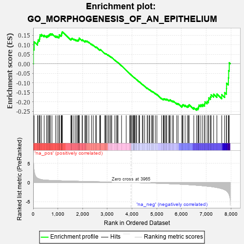
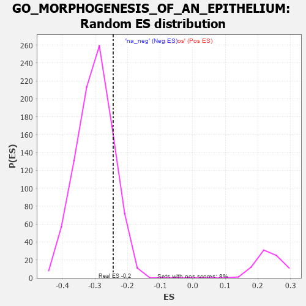

| | | Dataset | 7d |
| Phenotype | NoPhenotypeAvailable |
| Upregulated in class | na_neg |
| GeneSet | GO_MORPHOGENESIS_OF_AN_EPITHELIUM |
| Enrichment Score (ES) | -0.24412394 |
| Normalized Enrichment Score (NES) | -0.8107557 |
| Nominal p-value | 0.8445652 |
| FDR q-value | 0.9833574 |
| FWER p-Value | 1.0 |
Table: GSEA Results Summary

Fig 1: Enrichment plot: GO_MORPHOGENESIS_OF_AN_EPITHELIUM
Profile of the Running ES Score & Positions of GeneSet Members on the Rank Ordered List
| PROBE | GENE SYMBOL | GENE_TITLE | RANK IN GENE LIST | RANK METRIC SCORE | RUNNING ES | CORE ENRICHMENT | | 1 | ST14 | | | 7 | 5.713 | 0.0764 | No |
| 2 | SIX2 | | | 40 | 3.152 | 0.1150 | No |
| 3 | FOXF1 | | | 176 | 1.136 | 0.1131 | No |
| 4 | WNT16 | | | 198 | 1.072 | 0.1249 | No |
| 5 | LBX1 | | | 254 | 0.929 | 0.1305 | No |
| 6 | TBX20 | | | 267 | 0.880 | 0.1409 | No |
| 7 | HGF | | | 276 | 0.870 | 0.1516 | No |
| 8 | DLL1 | | | 337 | 0.760 | 0.1542 | No |
| 9 | SUFU | | | 443 | 0.665 | 0.1498 | No |
| 10 | SRF | | | 542 | 0.615 | 0.1456 | No |
| 11 | ALX1 | | | 590 | 0.598 | 0.1477 | No |
| 12 | GLMN | | | 632 | 0.583 | 0.1504 | No |
| 13 | HES5 | | | 661 | 0.571 | 0.1545 | No |
| 14 | FST | | | 698 | 0.560 | 0.1575 | No |
| 15 | ZIC3 | | | 760 | 0.542 | 0.1571 | No |
| 16 | STOX1 | | | 905 | 0.506 | 0.1455 | No |
| 17 | DVL3 | | | 971 | 0.490 | 0.1439 | No |
| 18 | YAP1 | | | 1041 | 0.475 | 0.1415 | No |
| 19 | MEF2C | | | 1054 | 0.473 | 0.1464 | No |
| 20 | RBM15 | | | 1057 | 0.473 | 0.1525 | No |
| 21 | SRC | | | 1128 | 0.459 | 0.1498 | No |
| 22 | MTSS1 | | | 1149 | 0.454 | 0.1534 | No |
| 23 | PSMD7 | | | 1152 | 0.454 | 0.1593 | No |
| 24 | GRSF1 | | | 1164 | 0.452 | 0.1640 | No |
| 25 | PSMD2 | | | 1181 | 0.450 | 0.1680 | No |
| 26 | LIAS | | | 1524 | 0.387 | 0.1296 | No |
| 27 | SOS1 | | | 1547 | 0.384 | 0.1320 | No |
| 28 | FZD1 | | | 1574 | 0.379 | 0.1338 | No |
| 29 | RXRA | | | 1647 | 0.365 | 0.1295 | No |
| 30 | PLOD3 | | | 1715 | 0.353 | 0.1258 | No |
| 31 | LRP5 | | | 1769 | 0.342 | 0.1236 | No |
| 32 | PSMD4 | | | 1811 | 0.335 | 0.1229 | No |
| 33 | GATA4 | | | 1837 | 0.330 | 0.1242 | No |
| 34 | AP2S1 | | | 1846 | 0.329 | 0.1276 | No |
| 35 | PSMD6 | | | 1858 | 0.326 | 0.1306 | No |
| 36 | SMAD4 | | | 1860 | 0.326 | 0.1349 | No |
| 37 | BRSK2 | | | 1979 | 0.308 | 0.1240 | No |
| 38 | ROR1 | | | 1993 | 0.306 | 0.1265 | No |
| 39 | FOXD1 | | | 2093 | 0.292 | 0.1178 | No |
| 40 | BMP7 | | | 2107 | 0.290 | 0.1201 | No |
| 41 | PSME4 | | | 2143 | 0.285 | 0.1195 | No |
| 42 | DDR1 | | | 2176 | 0.280 | 0.1192 | No |
| 43 | PSMF1 | | | 2251 | 0.268 | 0.1133 | No |
| 44 | MPP5 | | | 2362 | 0.251 | 0.1027 | No |
| 45 | MET | | | 2430 | 0.240 | 0.0974 | No |
| 46 | SALL4 | | | 2523 | 0.223 | 0.0887 | No |
| 47 | PSMD5 | | | 2560 | 0.218 | 0.0870 | No |
| 48 | KDM6A | | | 2690 | 0.200 | 0.0733 | No |
| 49 | PHB2 | | | 2712 | 0.197 | 0.0733 | No |
| 50 | SLIT2 | | | 2724 | 0.195 | 0.0745 | No |
| 51 | FGFR2 | | | 2895 | 0.167 | 0.0551 | No |
| 52 | ACVR1 | | | 2932 | 0.161 | 0.0527 | No |
| 53 | RAB10 | | | 2952 | 0.157 | 0.0524 | No |
| 54 | WNT4 | | | 3023 | 0.146 | 0.0454 | No |
| 55 | LEF1 | | | 3037 | 0.144 | 0.0457 | No |
| 56 | RREB1 | | | 3099 | 0.137 | 0.0398 | No |
| 57 | BTBD7 | | | 3143 | 0.131 | 0.0360 | No |
| 58 | PSMD9 | | | 3179 | 0.125 | 0.0333 | No |
| 59 | SMAD3 | | | 3303 | 0.105 | 0.0190 | No |
| 60 | FMN1 | | | 3363 | 0.095 | 0.0127 | No |
| 61 | MED1 | | | 3405 | 0.089 | 0.0087 | No |
| 62 | AP2A2 | | | 3433 | 0.085 | 0.0064 | No |
| 63 | EXOC5 | | | 3574 | 0.064 | -0.0106 | No |
| 64 | SKI | | | 3762 | 0.032 | -0.0340 | No |
| 65 | JAG2 | | | 3903 | 0.010 | -0.0517 | No |
| 66 | CCM2 | | | 3933 | 0.005 | -0.0554 | No |
| 67 | GPC6 | | | 3950 | 0.002 | -0.0574 | No |
| 68 | EYA1 | | | 3987 | -0.006 | -0.0619 | No |
| 69 | TOR1A | | | 4030 | -0.013 | -0.0671 | No |
| 70 | SFRP2 | | | 4065 | -0.018 | -0.0712 | No |
| 71 | CSF1 | | | 4074 | -0.019 | -0.0719 | No |
| 72 | TCF15 | | | 4077 | -0.020 | -0.0719 | No |
| 73 | WNT2 | | | 4084 | -0.021 | -0.0724 | No |
| 74 | MTOR | | | 4114 | -0.025 | -0.0758 | No |
| 75 | ABL1 | | | 4125 | -0.027 | -0.0767 | No |
| 76 | PDX1 | | | 4179 | -0.038 | -0.0829 | No |
| 77 | AP2B1 | | | 4185 | -0.039 | -0.0830 | No |
| 78 | PSME3 | | | 4280 | -0.056 | -0.0943 | No |
| 79 | WNT11 | | | 4282 | -0.056 | -0.0937 | No |
| 80 | TBX2 | | | 4303 | -0.060 | -0.0954 | No |
| 81 | RALA | | | 4416 | -0.079 | -0.1086 | No |
| 82 | SETD2 | | | 4443 | -0.084 | -0.1108 | No |
| 83 | ILK | | | 4510 | -0.096 | -0.1179 | No |
| 84 | GATA3 | | | 4614 | -0.120 | -0.1294 | No |
| 85 | DLG5 | | | 4619 | -0.121 | -0.1283 | No |
| 86 | PTK7 | | | 4687 | -0.136 | -0.1350 | No |
| 87 | LHX2 | | | 4716 | -0.143 | -0.1367 | No |
| 88 | CD151 | | | 4791 | -0.156 | -0.1440 | No |
| 89 | WDR1 | | | 4824 | -0.163 | -0.1459 | No |
| 90 | DLG1 | | | 4860 | -0.169 | -0.1481 | No |
| 91 | FZD4 | | | 4940 | -0.186 | -0.1556 | No |
| 92 | KLF4 | | | 5005 | -0.198 | -0.1611 | No |
| 93 | SMO | | | 5195 | -0.247 | -0.1819 | No |
| 94 | PTEN | | | 5262 | -0.261 | -0.1868 | No |
| 95 | EPHA4 | | | 5273 | -0.265 | -0.1845 | No |
| 96 | MAGI2 | | | 5295 | -0.269 | -0.1835 | No |
| 97 | TCF21 | | | 5340 | -0.283 | -0.1853 | No |
| 98 | FZD5 | | | 5386 | -0.292 | -0.1871 | No |
| 99 | SOX8 | | | 5404 | -0.296 | -0.1852 | No |
| 100 | STIL | | | 5483 | -0.314 | -0.1910 | No |
| 101 | VDR | | | 5517 | -0.325 | -0.1908 | No |
| 102 | FGFR1 | | | 5543 | -0.332 | -0.1895 | No |
| 103 | ROR2 | | | 5626 | -0.353 | -0.1952 | No |
| 104 | PSMD1 | | | 5674 | -0.367 | -0.1962 | No |
| 105 | BBS4 | | | 5806 | -0.407 | -0.2074 | No |
| 106 | BBS5 | | | 5862 | -0.421 | -0.2087 | No |
| 107 | PRKX | | | 6016 | -0.477 | -0.2218 | No |
| 108 | RAC1 | | | 6036 | -0.484 | -0.2177 | No |
| 109 | JAG1 | | | 6060 | -0.494 | -0.2139 | No |
| 110 | STK4 | | | 6145 | -0.518 | -0.2176 | No |
| 111 | CDC42 | | | 6236 | -0.548 | -0.2217 | No |
| 112 | IFT52 | | | 6280 | -0.566 | -0.2195 | No |
| 113 | IFT57 | | | 6307 | -0.579 | -0.2150 | No |
| 114 | LAMA1 | | | 6496 | -0.659 | -0.2301 | No |
| 115 | MKS1 | | | 6607 | -0.715 | -0.2345 | Yes |
| 116 | TMED2 | | | 6665 | -0.746 | -0.2316 | Yes |
| 117 | PAK1 | | | 6691 | -0.757 | -0.2246 | Yes |
| 118 | EGFR | | | 6708 | -0.765 | -0.2163 | Yes |
| 119 | C2CD3 | | | 6783 | -0.802 | -0.2149 | Yes |
| 120 | AHI1 | | | 6860 | -0.848 | -0.2131 | Yes |
| 121 | MIB1 | | | 6932 | -0.890 | -0.2101 | Yes |
| 122 | FAT4 | | | 6948 | -0.901 | -0.1999 | Yes |
| 123 | RIPK4 | | | 7034 | -0.961 | -0.1977 | Yes |
| 124 | BBS7 | | | 7089 | -0.988 | -0.1912 | Yes |
| 125 | RYK | | | 7102 | -1.000 | -0.1792 | Yes |
| 126 | AR | | | 7169 | -1.046 | -0.1735 | Yes |
| 127 | OVOL2 | | | 7197 | -1.068 | -0.1625 | Yes |
| 128 | MSX2 | | | 7299 | -1.171 | -0.1595 | Yes |
| 129 | LHX1 | | | 7431 | -1.305 | -0.1586 | Yes |
| 130 | PKD1 | | | 7628 | -1.611 | -0.1618 | Yes |
| 131 | CASP3 | | | 7747 | -1.902 | -0.1511 | Yes |
| 132 | TRAF6 | | | 7818 | -2.157 | -0.1309 | Yes |
| 133 | PKD2 | | | 7822 | -2.167 | -0.1019 | Yes |
| 134 | CAV3 | | | 7896 | -2.739 | -0.0742 | Yes |
| 135 | PSMD3 | | | 7907 | -2.887 | -0.0364 | Yes |
| 136 | PSMD8 | | | 7931 | -3.286 | 0.0051 | Yes |
Table: GSEA details [plain text format]

Fig 2: GO_MORPHOGENESIS_OF_AN_EPITHELIUM: Random ES distribution
Gene set null distribution of ES for GO_MORPHOGENESIS_OF_AN_EPITHELIUM